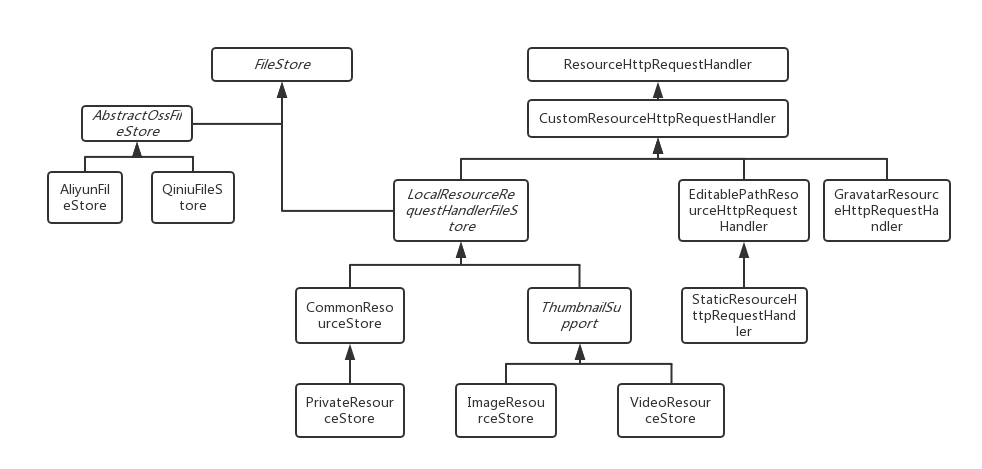

系统文件存储关系： 
多个FileStore组成一个FileServer，FileServer用于主要的文件存储，并且提供了动态缩放等服务
本地文件存储，同时承担着文件访问的工作
由于继承自ResourceHttpRequestHandler,所以支持ResourceHttpRequestHandler的配置项，除此之外，还支持以下配置项
| 属性 | 类型 | 是否必须 | 默认 | 说明 |
|---|---|---|---|---|
| id | int | 是 | 存储器ID，全局唯一 | |
| name | string | 是 | 存储器名称 | |
| absPath | string | 是 | 文件存储的绝对路径,指向一个文件夹 | |
| urlPrefix | string | 否 | {配置的地址}/file | 文件访问前缀，如果需要指定其他路径，必须提供一个绝对地址 |
| requestMatcher | RequestMatcher | 否 | 请求匹配器，可用于防盗链 | |
| readOnly | boolean | 否 | true | 如果该属性设置了true， 那么将无法再用来存储文件 |
| registerMapping | boolean | 否 | false | 是否注册为Controller，如果为true，会受到拦截器的影响，可以用来做一些额外的权限判断，比如只允许登录后访问，如果为false，等价于
<mvc:resources location="/resources/" mapping="/resources/**"/>如果只是作为一个单纯的存储器，建议为false，另外，如果为true，不应该被nginx或者apache代理 |
构造函数
CommonResourceStore() CommonResourceStore(String urlPatternPrefix)默认的urlPatternPrefix为file，也就是说，所有 /file/**请求都会被这个文件存储器处理，通过指定urlPatternPrefix可以更改路径，例如
CommonResourceStore("file2")
所有 /file2/**请求会被存储器处理
构造函数同 CommonResourceStore
用于支持图片的动态缩放服务
由于继承自LocalResourceRequestHandlerFileStore,所以支持LocalResourceRequestHandlerFileStore的配置项，除此之外，还支持以下配置项
| 属性 | 类型 | 是否必须 | 默认 | 说明 |
|---|---|---|---|---|
| resizeValidator | ResizeValidator | 否 | 校验缩放尺寸是否能够被接受，默认为接受任意缩放尺寸 | |
| supportWebp | boolean | 否 | false | 是否支持webp,该选项的开启受到ImageHelper的限制，如果ImageHelper无法处理webp格式的图片，那么supportWebp始终为false， 开启该选项之后，某些浏览器(Chrome)访问图片时会自动生成webp格式的缩略图，通过指定nowebp参数(可以为任意值)，可生成jpeg|png格式的缩略图 |
| thumbAbsPath | string | 是 | 缩略图文件存放绝对路径，指向一个文件夹 | |
| smallResize | Resize | 否 | 小缩略图尺寸，如果不提供，则为图片原始尺寸 | |
| middleResize | Resize | 否 | 中缩略图尺寸，如果不提供，则为图片原始尺寸 | |
| largeResize | Resize | 否 | 大缩略图尺寸，如果不提供，则为图片原始尺寸 | |
| 如果提供了resizeValidator，那么提供的尺寸必须能被ResizeValidator校验通过 | ||||
| http://localhost/image/1.png/64 | 生成64尺寸的缩略图 |
| http://localhost/image/1.png/64X32 | 生成64x32尺寸的缩略图(保持原图的纵横比) |
| http://localhost/image/1.png/64X32! | 生成64x32尺寸的缩略图(强制缩放) |
| 默认情况下，无论何种缩放，都不会将图片放大 | |
缩略图服务依赖于
ImageHelper
，系统默认提供了
GraphicsMagickImageHelper
和
JavaImageHelper
两个辅助类，GraphicsMagickImageHelper依赖于GraphicsMagick和im4java，以及libwebp，JavaImageHelper不依赖任何第三方，但它会消耗更多的内存和CPU，同时不支持webp格式的图片处理
用于存储jpg|jpeg|png|gif格式的图片
除了ThumbnailSupport的可配置项之外，还支持以下配置项
| 属性 | 类型 | 是否必须 | 默认 | 说明 |
|---|---|---|---|---|
| sourceProtected | boolean | 否 | false | 是否开启原图保护，如果开启，那么只能通过缩略图路径访问图片，GIF图片不受限制 |
| animatedWebpConfigure | AnimatedWebpConfigure | 否 | null | 是否开启AnimatedWebp，如果开启，那么在浏览器支持webp的情况下，会将gif转化为animated webp(该选项的开启受到ImageHelper的限制，如果ImageHelper无法处理animated webp格式的图片，那么无法生成animated webp) |
AnimatedWebpConfigure(int semaphore);semaphore用来限制同时转化animated webp的线程数，可配置项如下：
| 属性 | 类型 | 是否必须 | 默认 | 说明 |
|---|---|---|---|---|
| lossy | boolean | 否 | true | 请见 https://developers.google.com/speed/webp/docs/gif2webp |
| mixed | boolean | 否 | false | 请见 https://developers.google.com/speed/webp/docs/gif2webp |
| q | float(0~100) | 否 | 75F | 请见 https://developers.google.com/speed/webp/docs/gif2webp |
| method | int(0~6) | 否 | 4 | 请见 https://developers.google.com/speed/webp/docs/gif2webp |
| metadata | Metadata | 否 | NONE | 请见 https://developers.google.com/speed/webp/docs/gif2webp |
用来存储视频文件
构造函数如下：
VideoResourceStore(String urlPatternPrefix, String[] allowExtensions, int timeoutSecond)allowExtensions用于指定允许的视频格式，默认为mp4
用于支持第三方的oss存储
AbstractOssFileStore构造函数如下：
AbstractOssFileStore(int id, String name)
其中id为存储器ID，全局唯一，name为存储器名称
AbstractOssFileStore可配置项如下：
| 属性 | 类型 | 是否必须 | 默认 | 说明 |
|---|---|---|---|---|
| backupAbsPath | string | 否 | 备份绝对路径，指向一个文件夹，如果提供，每次上传到七牛云之前会将文件备份到该目录 | |
| smallResize | Resize | 否 | 小缩略图尺寸，如果不提供，则为图片原始尺寸，开启原图保护之后无效 | |
| middleResize | Resize | 否 | 中缩略图尺寸，如果不提供，则为图片原始尺寸，开启原图保护之后无效 | |
| largeResize | Resize | 否 | 打缩略图尺寸，如果不提供，则为图片原始尺寸，开启原图保护之后无效 |
用来支持七牛云的oss存储
QiniuFileStore构造函数如下：
QiniuFileStore(int id, String name,String ak, String sk, String bucket)
其中id为存储器ID，全局唯一，name为存储器名称，ak为appkey，sk为密钥，bucket为存储空间
QiniuFileStore继承自AbstractOssFileStore，同时支持配置以下属性:
| 属性 | 类型 | 是否必须 | 默认 | 说明 |
|---|---|---|---|---|
| urlPrefix | string | 是 | 外链访问前缀 | |
| secret | boolean | 否 | false | 是否是私人bucket |
| privateDownloadUrlExpires | long | 否 | 3600 | 下载链接有效时间 |
| sourceProtected | boolean | 否 | false | 原图保护，开启原图保护之后必须提供styleSplitChar和style |
| styleSplitChar | char | 否 | - | 样式分隔符 |
| style | string | 否 | 图片访问样式 |
默认情况下，每个类型的FileStore都只能分别配置一个，但可以通过在它们的构造函数中指定具体的路径来配置多个， 即便如此，每个存储器仍应该指向不同的存储文件夹，并且存储文件夹之间不应该存在父子关系，下面是一个参考配置：
<bean class="me.qyh.blog.file.local.CommonResourceStore"> <property name="absPath" value="/web/file/blog_file" /> <property name="id" value="2" /> <property name="name" value="文件存储" /> <property name="cacheSeconds" value="31556926" /> </bean> <bean class="me.qyh.blog.file.local.CommonResourceStore"> <constructor-arg value="file2" /> <property name="absPath" value="/web/file/blog_file2" /> <property name="id" value="3" /> <property name="name" value="文件存储2" /> <property name="cacheSeconds" value="31556926" /> </bean>
为了尽可能的减少服务器压力，当删除文件时候并不会立即删除实际的文件，只是将实际文件置为待删除状态，通过FileClearJob在某个时刻统一删除， 可以在resources/spring/file.xml中配置该job的频率，默认为凌晨三点执行一次删除工作，默认配置如下：
<task:scheduled-tasks scheduler="taskScheduler"> <task:scheduled ref="fileService" method="clear" cron="0 0 3 * * ?" /> </task:scheduled-tasks>